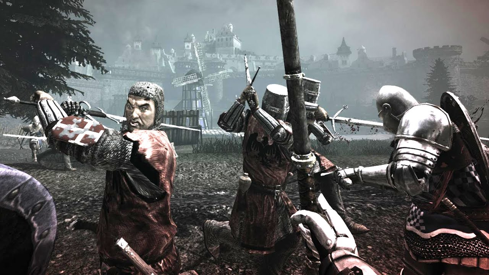
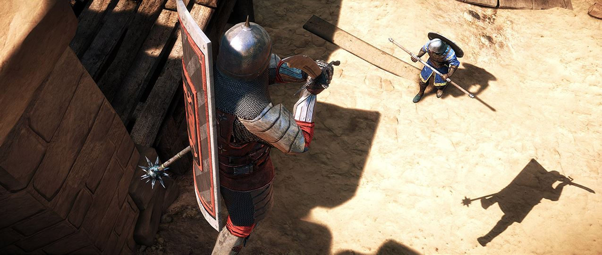

Chivalry:Medieval Warfare
Chivalry:Medieval Warfare ist ein First-Person-Slasher mit Fokus auf den Mehrspieler. Das Spiel versucht den Eindruck zu erzeugen, dass man wirklich auf einem mittelalterlichen Schlachtfelt ist. Es versucht das Schwert direkt in die Hände des Spielers zu legen.
Chivalry:Medieval Warfare bietet eine große Variation an Möglichkeiten um auf Angriffe zu reagieren. Schließe dich einem von zwei Orden an. Wähle zwischen 4 Klassen.
- Ritter
- Pikenier
- Waffenknecht
- Bogenschütze
Mit bis zu 60 Waffen wird ein vielseitiges Spielerlebnis bereit gestellt. Dieses Arsenal reicht vom Breitschwert und der Streitaxt bis zum Langbogen und dem Speer.
In Chivalry:Medieval Warfare spielt man in einer fiktionalen, aber realistisch gestalteten, Welt in Online-Kämpfen um Ehre. Dabei belagert man Burgen, plündert Dörfer und kämpft in Arenen. Durch das dynamische Missionssystem spielt Strategie eine wichtige Rolle. So werden Tore niedergebrochen, Dörfer geplündert und der gegnerische Adel gemeuchelt, um zu gewinnen.
